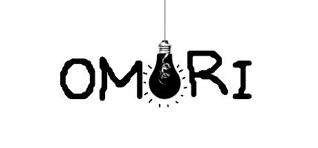
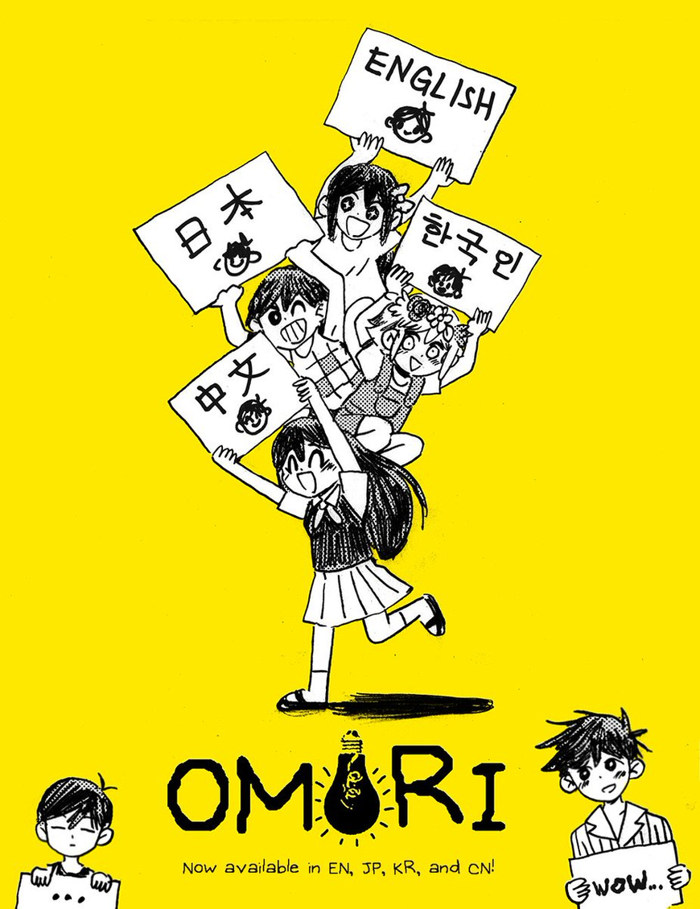
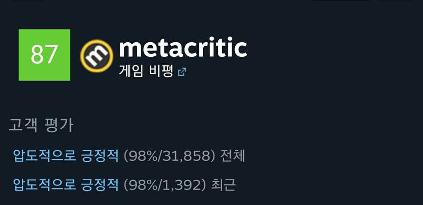
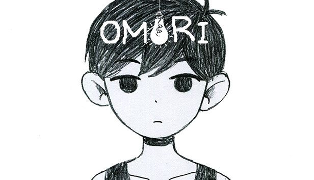

”Explore a strange world full of colorful friends and foes.
When the time comes, the path you’ve chosen will determine your fate…
and perhaps the fate of others as well.”
(형형색색의 친구와 적으로 가득한 이상한 세계를 탐험하세요.
때가 오면, 당신이 정한 길이 스스로의 운명을 결정할 것입니다…
어쩌면 다른 이들의 운명까지도요.) (스팀 상점 소개글)
호러 RPG 게임 오모리입니다. 미국 개발자 OMOCAT이 개발한 오모리는 게임 주인공 오모리가 여러 친구와 적으로 가득한 이상한 세계를 탐험하며 숨겨진 비밀을 밝혀내는 과정을 그린 RPG입니다. 주인공 오모리를 포함해 여러 캐릭터를 성장시켜 게임을 전개해가며 스토리는 전체적으로 우울하고, 섬뜩합니다. 또 선택에 따라 스토리가 달라지며 멀티 엔딩 게임입니다.
우울증, 불안, 자살과 같은 현대인들이 겪는 문제를 숨김없이 묘사하는 작품이다. 인터뷰에 따르면 관련 상담사의 자문은 없었으나 제작자인 오모캣 본인을 포함한 팀 멤버들이 우울증에 시달린 경험을 게임을 통해 투영하였다고 한다. 다만 전반적인 그래픽과 연출은 동화풍이라 거부감은 덜한 편이다. 등장인물들은 일본 애니메이션 + 미국 카툰 그림체로 묘사되어 있다. 인물 관계와 인물들의 사고방식은 현실보다 소년만화에서 볼 법한 모습으로 묘사되어 있다.
대외적으로 완전히 호러 게임이라는 인식이 존재하는데, 실제로 해보면 오히려 작중 RPG의 비중이 훨씬 더 크며, 공포 요소는 그 사이사이에 배치되어 있다.[4] 따라서 플레이 시 보통 플레이 타임이 짧은 호러 게임이 아닌, 공포 요소가 많이 가미된 언더테일, OFF, LISA 시리즈와 같은 RPG 게임으로 생각하는 것이 좋다. (나무위키에 있는 게임 소개)

(일러스트 너무 귀엽습니다.)
공식 한국어 버전은 3월 18일에 나왔고 아직은 반영이 안 되어서 한국어가 적용이 안된대요. 아마 월요일? 늦어도 화요일에 적용되지 않을까 싶습니다. 현재 비공식 한글 패치도 존재합니다. 현재 스팀에서 25퍼센트 할인해서 15370원에 판매중입니다.(3월 22일까지입니다.)
https://caswac1.tistory.com/m/324 (한글패치 사이트)
쯔꾸르게임을 좋아하시는 분들은 무조건 해보셔야할 게임 같습니다. 저도 예전에 해보고 잊고 있었는데 지금 또 해보려고 해요. 심리적인 압박감이 공포로 다가오고 슬픈 이야기도 있어서 울 수도 있다고 합니다. 또 현대인들에게 흔한 정신병들을 묘사하고 있어서 오히려 여러분들에게 힐링이 되지 않을까 생각해요.
저도 내일 할 일을 끝내고 타이드업과 함께 달려볼 예정입니다.

현재 게임 평가는 정말 좋습니다. 메타스코어 87에 스팀평가 98퍼센트로 압도적으로 긍정적입니다.

우리 모두 일요일을 방구석에서 오모리와 함께 보내보는건 어떨까요? 더팜이나 롤만 하지말구요. :) 다들 좋은 주말 되십시오
Everything is going to be okay(게임 시작 전 문구)
후원댓글 12개
댓글 12개 ▼